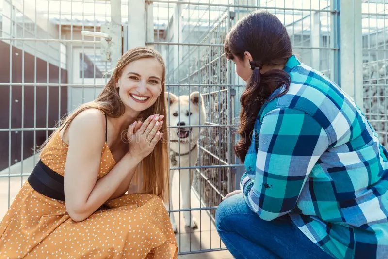

Adoção Responsável ou doações:
A adoção de pets é um gesto de amor que transforma vidas, pois resgata animais abandonados e proporciona a eles uma nova chance de ter uma vida feliz, além de trazer companhia, benefícios para a saúde mental e a oportunidade de ensinar sobre responsabilidade e empatia!
Você também pode contribuir por meio de doações financeiras, de produtos (como ração, medicamentos e itens de higiene).Seremos imensamente gratos por toda ajuda,e nossos pets agradecem !